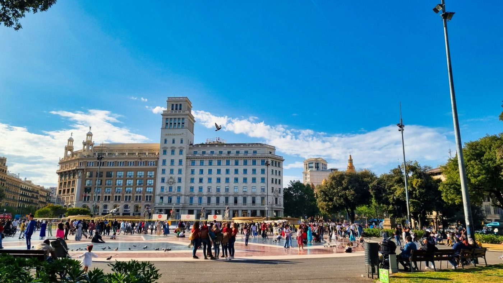

Roman walls, Gothic churches, the Royal Square where Columbus met the kings. Two thousand years on foot.
Roman Barcino, Gaudi's first lampposts, thirteen geese in a Gothic cloister, the square where Columbus met the king, the church built by dockers, a park torn from a fortress. Not bad for an afternoon.
Casa Batllo, La Pedrera, Casa de les Punxes and the Sagrada Familia. Eight stops through the Eixample, following the genius of Gaudi from his early commissions to his life's work.
Start Gaudi TourGet all 8 stops with narrated audio and live GPS. A code will be sent to you after purchase to unlock the full tour.
Unlock Full Tour - €4.99Payments powered by Lemon Squeezy & Stripe